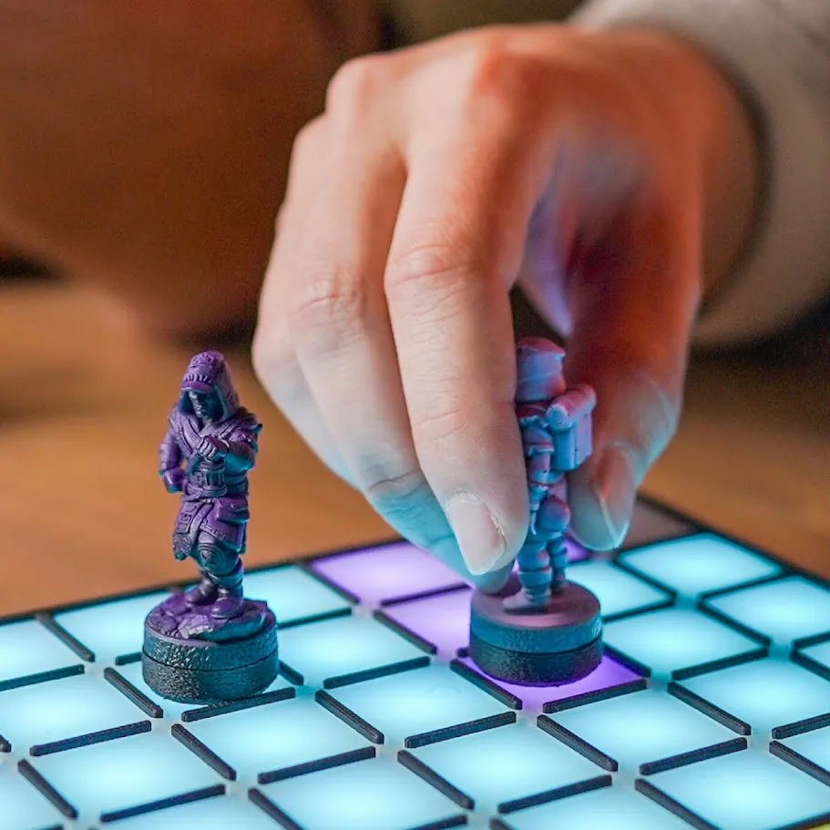

01Qué es Atlas 64
Atlas 64 es una consola de juegos de mesa: un tablero real, con fichas reales y gente real alrededor de una mesa, más lo único que el cartón no puede hacer. Cada casilla se ilumina, y el tablero sabe cuándo una ficha llega a una casilla o se va.
Un tablero es un módulo de 8 × 8 casillas, 64 en total: de ahí el nombre. Cada casilla tiene su propia luz de color y su propio sensor. Un juego puede usar un solo módulo o juntar varios para armar una mesa más grande.

Si vas a diseñar para Atlas, tenelo presente desde el principio: estás diseñando un juego de mesa que tiene cerebro, no un videojuego con un tablero pegado. Los mejores juegos de Atlas usan las luces para sacar fricción (el armado, las cuentas, la información oculta) y le dejan la mesa a los jugadores.
02Cómo corre un juego
El juego no vive adentro del tablero. Corre en un teléfono, dentro de la app AtlasHub, y le habla al tablero por Bluetooth:
- El teléfono corre el juego: dibuja la pantalla (menús, puntajes, instrucciones) y decide qué casillas se encienden y de qué color.
- El módulo 0, el máster, recibe esas luces por Bluetooth, se las pasa a los demás módulos y avisa cada ficha que se apoya o se levanta.
- Los otros módulos se conectan al máster sin cables. Un juego puede usar de 1 a 7 módulos en total.
Esa división le da forma a tu juego. La pantalla es para lo que los jugadores leen; el tablero, para lo que tocan. Un puntaje, una regla, una carta que sólo un jugador debe ver: teléfono. Un movimiento, un territorio, un camino: tablero.
03Los módulos y la mesa
Cada módulo es un tablero suelto con su propia batería. Su frente tiene el botón de encendido a la izquierda, el puerto USB-C a la derecha y una fila de contactos magnéticos en el medio, donde se engancha Atlas Core.

Los módulos pueden ir en cualquier lugar de la mesa y en cualquier orientación: uno al lado del otro, apilados, en L, girados. El tablero no sabe cómo los acomodaste. Sólo informa “módulo 1, casilla 3,4”. Entonces:
- Tu juego tiene que explicarles a los jugadores cómo armar la mesa, en pantalla, antes de empezar (“poné el módulo 1 debajo del módulo 0”).
- Dejá a mano el frente de un módulo que pueda necesitar su cable: uno con poca batería quizás tenga que jugar enchufado.
- Si tu juego usa Atlas Core, dejá libre el frente del módulo 0 y al alcance de los jugadores.
04Cómo ve Atlas 64 una ficha
Debajo de cada casilla hay un sensor magnético (un sensor de efecto Hall), y cada ficha de Atlas lleva un pequeño imán en la base. Cuando una ficha está sobre una casilla, el sensor siente el imán.
Con eso, el tablero le manda al juego dos tipos de eventos:
- Ficha apoyada: módulo, casilla. Algo acaba de caer en el módulo 0, casilla 3,4.
- Ficha levantada: módulo, casilla. Lo que había en esa casilla ya no está.
El tablero sabe que una casilla está ocupada, no qué ficha hay en ella. Para una casilla, un caballo y un peón son lo mismo. Si tu juego necesita saber qué ficha se movió, llevá la cuenta en el juego (“la que salió de 2,2 es la que acaba de caer en 2,4”) o usá Atlas Core.
Los sensores se calibran una vez y el tablero lo recuerda. Si alguna casilla empieza a leer mal, el tablero se puede recalibrar: tarda 8 segundos y hace un pitido por segundo mientras tanto.
05Atlas Core: saber qué ficha es cuál

Atlas Core es un lector NFC que se engancha en el frente del módulo 0. Cada ficha de Atlas tiene adentro un tag NFC con un identificador único de fábrica. Apoyás una ficha en Atlas Core y el juego sabe qué ficha es.
Atlas Core es opcional: muchos juegos no lo usan nunca. Y sólo funciona pegado al módulo 0.
Algunas cosas para saber antes de diseñar con él:
- Te dice quién, no dónde. Una ficha sobre Atlas Core queda identificada, pero Atlas Core no es una casilla: no hay posición.
- Los identificadores no se conocen de antemano. Cada ficha tiene uno distinto y no hay dos jugadores con el mismo juego de fichas, así que un juego no puede traer una lista. Lo habitual es asociar las fichas una vez: “apoyá el rey en Atlas Core”. El juego recuerda esa asociación para la próxima.
- Cada ficha tiene una pequeña memoria (144 bytes) que un juego puede leer y escribir mientras la ficha está sobre Atlas Core: el nivel de un personaje, las cargas de una poción. Esa memoria es de la ficha, así que cualquier juego la ve. Hoy funciona en el Simulador de Studio; el tablero real lo va a soportar con una actualización de firmware, así que un juego que la use tiene que seguir andando sin ella.
Usos típicos: personajes que llevan su identidad de un juego a otro, mecánicas de “escaneá para revelar”, o comprobar que la ficha que se mueve es la correcta.
06Límites para tener en cuenta al diseñar
Ninguno te va a impedir hacer un gran juego, pero cada uno sale más barato planearlo que descubrirlo después.
| Límite | Qué significa para tu diseño |
|---|---|
| 16 colores por juego | Cada juego elige una paleta de 16 colores (uno es “apagado”) y cada casilla usa uno de ellos. Alcanza para equipos, terrenos y estados; no para degradés. |
| Brillo de 0 a 15 | Los niveles 1 a 3 no se ven en el tablero real, y el jugador puede bajar el brillo hasta el 20%, donde todo lo que esté por debajo de 8 desaparece. Para lo que tiene que verse siempre, usá 8 o más. |
| Unas 24 actualizaciones por segundo | Las luces viajan por Bluetooth. Cambialas cuando pasa algo, no todo el tiempo. Un pulso lento anda; una animación rápida, no. |
| Sólo presencia | Las casillas saben que hay una ficha, no cuál. Usá Atlas Core o seguí los movimientos en el juego. |
| Atlas Core sólo en el módulo 0 | Un lector por mesa, en el frente del módulo 0. |
| De 1 a 7 módulos | Cada juego declara el mínimo que necesita y el máximo que usa. AtlasHub avisa a quien tenga menos. |
| Una orientación de pantalla | La pantalla del teléfono es de 393 × 852, y cada juego es vertical u horizontal. |
07Glosario
- Módulo
- Un tablero de 8 × 8. El módulo 0 es el máster, el que habla con el teléfono.
- Casilla
- Uno de los 64 cuadrados de un módulo, con su propia luz y su sensor. Se escribe x,y desde la esquina de arriba a la izquierda (de 0,0 a 7,7).
- Paleta
- Los 16 colores que un juego usa en el tablero.
- Ficha
- Todo lo que tenga en la base el imán y el tag NFC de Atlas: miniaturas, fichas, peones.
- Atlas Core
- El lector NFC que se pega al módulo 0 e identifica fichas.
- AtlasHub
- La app del teléfono donde los jugadores consiguen, instalan y juegan los juegos de Atlas.
- Atlas Studio
- El programa gratuito para PC donde hacés esos juegos. Es la próxima guía.